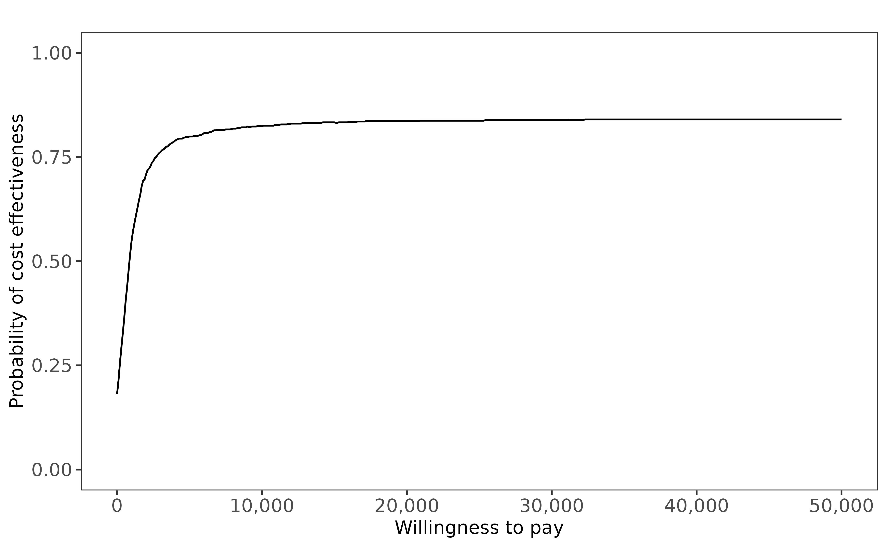
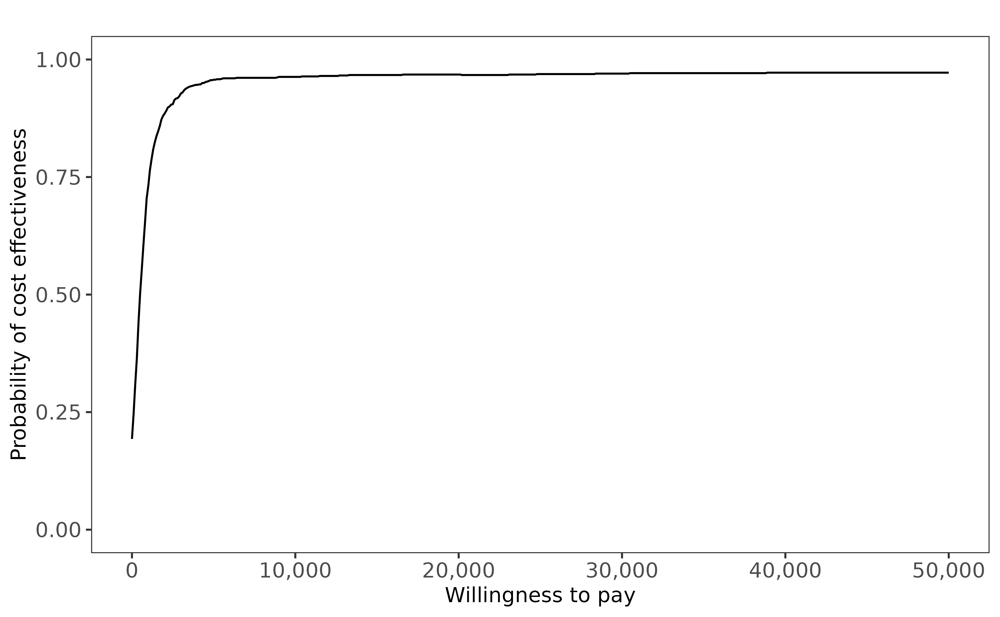
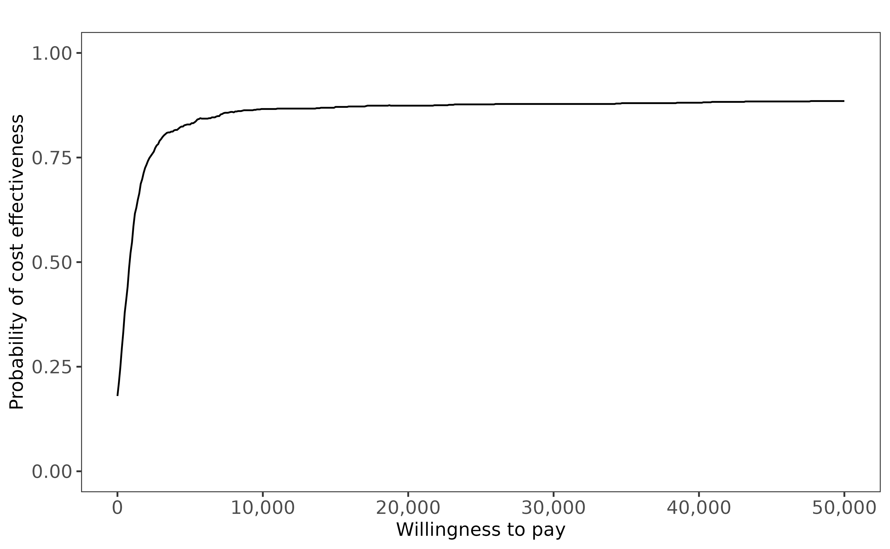
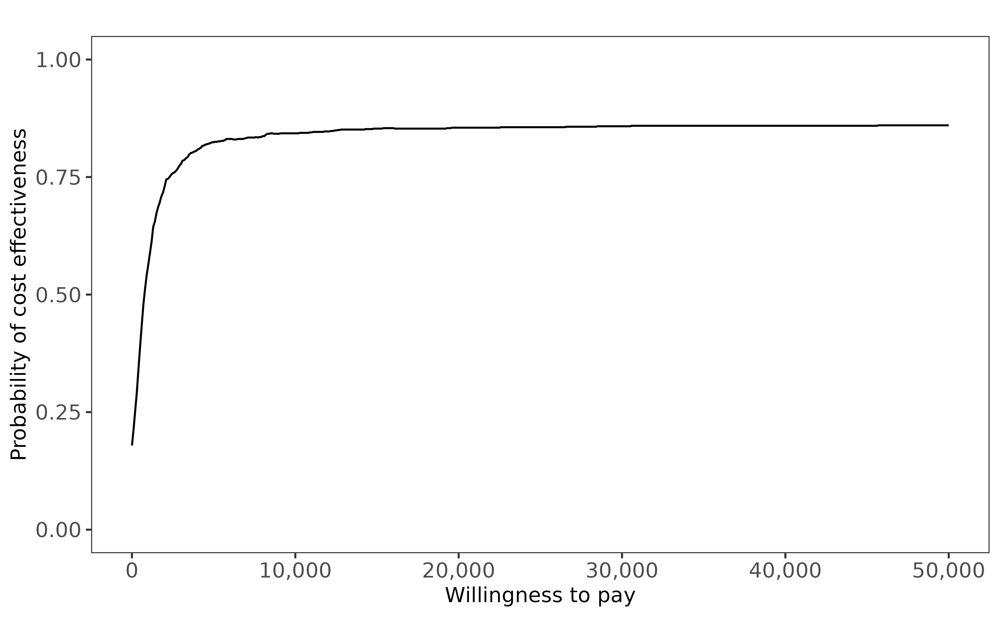
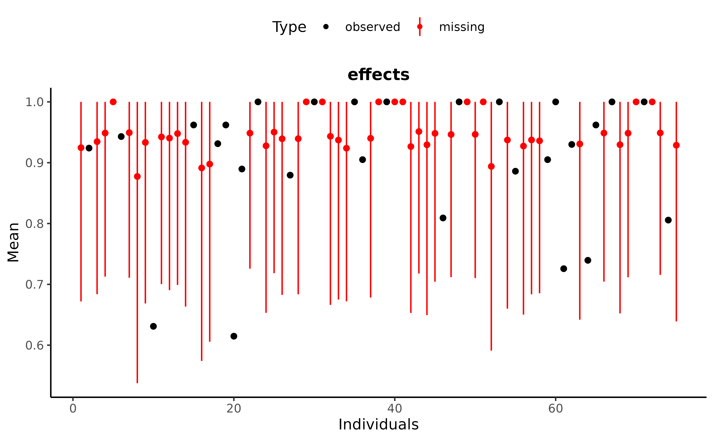
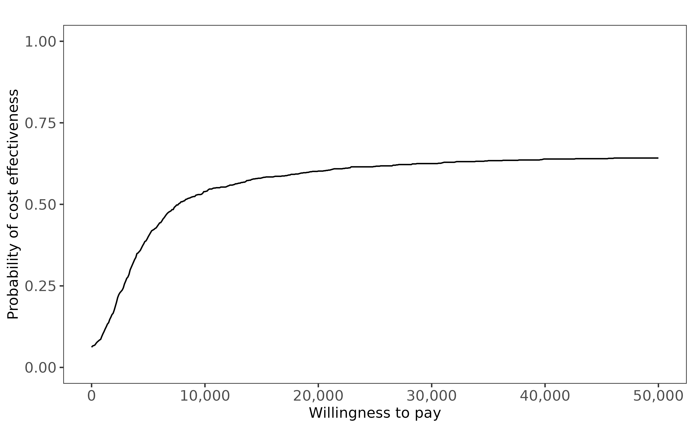
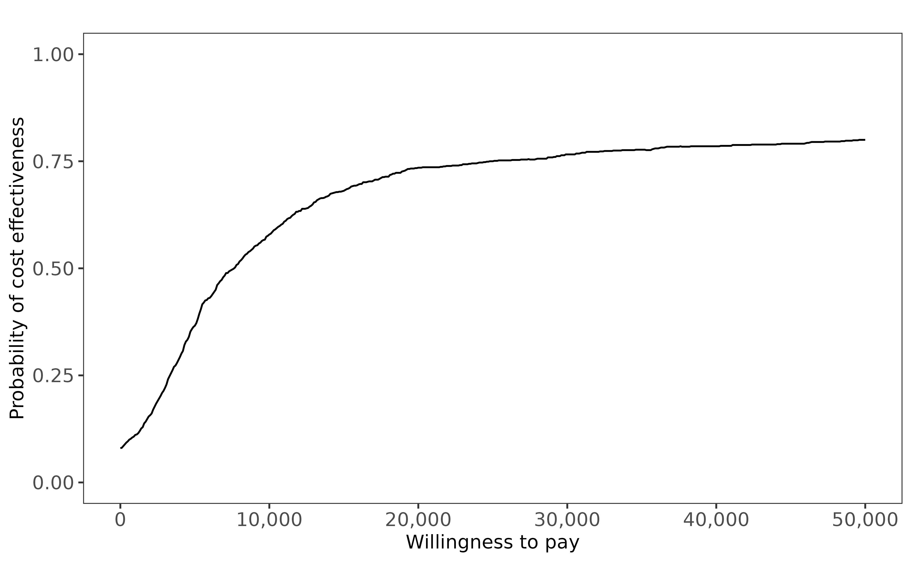

Fitting MNAR models in missingHE
Source:vignettes/Fitting_MNAR_models_in_missingHE.Rmd
Fitting_MNAR_models_in_missingHE.RmdWhen analysing partially-observed data, any statistical method makes either explicit or implicit assumptions about the missing values that can never be verified from the data at hand. Often, analyses rely on a missing at random (MAR) assumption, that is they assume that the observed data are able to fully explain missingness. However, there is always the chance that this assumption is not correct and that missingness also depends on some values which are not observed, leading to a missing not at random (MNAR) assumption. Thus, it is extremely important that the robustness of the results to a range of alternative missingness assumptions is assessed in sensitivity analysis, including MNAR.
Each missingness model approach in missingHE,
implemented either through the function selection,
pattern, or hurdle, can be fitted under MNAR
for either or both the effectiveness and cost outcomes. MNAR assumptions
are expressed in terms of some suitably-defined departures from MAR in
terms of mean effectiveness and cost parameters. This tutorial
illustrates how to specify a MNAR model in missingHE using
the built-in data set MenSS, which is directly available
when loading missingHE in the user’s R
workspace. See Introduction to
missingHE for an introductory tutorial on each type of missingness
approach in missingHE and for a general presentation of the
MenSS dataset.
If you would like to have more information on the package, or would like to point out potential issues in the current version, feel free to contact the maintainer at a.gabrio@maastrichtuniversity.nl. Suggestions on how to improve the package are also very welcome. A development version of the package is also available from the author’s main GitHub repository at https://github.com/AnGabrio/missingHE.
Handling MNAR using selection models
Selection models encode MNAR assumptions by directly modelling the
missingness mechanism, i.e., the model for the missing data indicator,
as a function of some partially-observed variables. In
missingHE, MNAR is specified by including the outcome
variables
(
and/or
)
inside the model formulae of the corresponding missing indicators
(model.me and model.mc). For example, a model
encoding a MNAR assumption for the missing effectiveness mechanism and a
MAR assumption for the missing cost mechanism can be specified by
setting
model.me <- me ~ e + ...
model.mc <- mc ~ 1 + ...where me and mc indicate the effectiveness
and cost missingness indicator variables, while ... is a
suitable form for the combination of covariates to be included in each
model. Inclusion of e into model.me instructs
missingHE to include the partially-observed effectiveness
variable into the logistic regression model for its missingness
indicator. Since the regression coefficient capturing the dependence
between missingness and outcome
()
cannot be fully estimated from the observed data, its estimation implies
some form of MNAR assumption for the missing effectiveness mechanism. In
selection models, two sources of external information are used to
identify these parameters: informative prior
distributions and distributional outcome
assumptions.
Informative priors on (or for costs) can be specified through an
Rlist object containing information about the desired prior specification, including name of the parametric distribution assumed (among a set of pre-defined choices) and its corresponding prior values. This list can then be passed to theselectionfunction using the optional argumentpriorto overwrite the default priors (standard normals) assumed bymissingHEfor these parameters.The distribution assumed for each outcome can be selected among a pre-defined set of parametric choices (among popular choices in the literature) using the arguments
dist_eanddist_cinside theselectionfunction. Typehelp(selection)to access the full list of available distributions for and .
As an example, let us fit a MNAR selection model for the
effectiveness variables (QALYs) in the MenSS dataset using
the following command
> NN.sel1 <- selection(data = MenSS, model.eff = e ~ trt + u.0,
+ model.cost = c ~ trt, model.me = me ~ e,
+ model.mc = mc ~ 1, type = "MNAR",
+ n.iter = 1000, ref = 2,
+ dist_e = "norm", dist_c = "norm")The MNAR assumption is encoded into the model by: setting the
argument type = "MNAR"; adding the term e
inside model.me. As for the outcome model, both
effectiveness and costs are assumed to follow normal distributions, with
the inclusion of the baseline utilities (u.0) as covariates
into the model of
.
Since we did not provide custom priors, default standard normals are
specified for
.
missingHE allows a separate specification of the
assumptions on the effectiveness and cost missingness mechanisms through
the arguments model.me and model.mc,
respectively. When desired, other fully-observed variables can also be
included into the missingness models (either under MAR or MNAR
assumptions), to improve the estimation of the model parameters.
Posterior summaries for the estimates of model parameters under the
selected missingness assumptions can then be retrieved through the
postsum function.
> postsum(NN.sel1)
#> mean sd 2.5% 50% 97.5% Rhat n.eff
#> alpha[1] 0.5599533 0.06907426 0.4575652 0.5495287 0.7207763 1.00 1000
#> alpha[2] 0.0306913 0.03126271 -0.0339923 0.0314613 0.0901279 1.23 11
#> alpha[3] 0.3718716 0.07022373 0.2005000 0.3823835 0.4697024 1.01 1000
#> beta[1] 81.3972696 26.89877688 27.6844562 80.9085134 132.0675030 1.00 880
#> beta[2] 27.2147242 28.18871012 -26.4252899 27.5554026 84.2765172 1.00 1000
#> delta_e -0.2007956 1.00513938 -1.9452491 -0.3234225 1.7632070 1.01 130
#> gamma_c 0.9016351 0.17221357 0.5780955 0.9007196 1.2308978 1.01 350
#> gamma_e 1.0924554 0.92128733 -0.7363396 1.2038505 2.6780230 1.01 120
#> p_c 0.7100066 0.03508521 0.6406291 0.7110974 0.7739756 1.00 380
#> p_e 0.7131744 0.03471405 0.6442108 0.7134823 0.7820707 1.00 1000
#> s_c 246.5582447 28.36901150 198.7271974 244.9672838 305.0147032 1.00 450
#> s_e 0.0915624 0.00985752 0.0739536 0.0903899 0.1150824 1.00 510
#> tau_c 0.0000171 0.00000387 0.0000107 0.0000167 0.0000253 1.00 450
#> tau_e 123.3572028 26.08544154 75.5060777 122.3942175 182.8445814 1.00 510
#> tmu_c 95.7748598 28.40123049 39.3187191 95.8555556 149.2801288 1.01 390
#> tmu_e 0.9041271 0.01583446 0.8755038 0.9030595 0.9374956 1.02 200We now consider an alternative MNAR specification where we encode informative priors on . In general, it is difficult to attach a specific interpretation to the values for this parameter (and therefore also to its priors) because its effect may vary depending on the distributional assumptions made on the outcome. In this applied example we will therefore only illustrate how some already-defined suitable prior information can be passed into the model, rather than focussing on the plausibility of the chosen values within the current context.
We first define our priors by creating a list object called
my.prior. Within this list, we create a vector called
"delta.prior.e" containing the following elements: name of
the prior distribution ("norm"); the prior values for the
selected distribution (mean of
and precision of
).
> my.prior <- list(
+ "delta.prior.e" = c("norm", 10, 1)
+ )As a simple exercise, we increase the prior mean of
to
to assess the impact on posterior estimates of a quite informative prior
about this parameter (relatively high positive value on the logit
scale). We then fit the model using the new prior specification by
passing my.prior to the argument prior inside
selection.
> NN.sel2 <- selection(data = MenSS, model.eff = e ~ trt + u.0,
+ model.cost = c ~ trt, model.me = me ~ e,
+ model.mc = mc ~ 1, type = "MNAR",
+ n.iter = 1000, ref = 2, prior = my.prior,
+ dist_e = "norm", dist_c = "norm")We can now check the results
> postsum(NN.sel2)
#> mean sd 2.5% 50% 97.5% Rhat n.eff
#> alpha[1] 0.6600167 0.0781434 0.5238052 0.6597518 0.8014864 1.02 210
#> alpha[2] 0.0502063 0.0280245 -0.0012221 0.0496505 0.1100923 1.00 740
#> alpha[3] 0.3259157 0.0772075 0.1823807 0.3231588 0.4701350 1.03 340
#> beta[1] 82.3701863 26.5665264 30.9678959 82.9121768 135.4433126 1.01 270
#> beta[2] 25.4637825 28.2280319 -29.3187886 24.6450643 79.7246617 1.00 750
#> delta_e 9.3508834 1.0795372 7.1374088 9.4664208 11.3645440 1.15 15
#> gamma_c 0.9028063 0.1653424 0.5809345 0.9033879 1.2351742 1.00 430
#> gamma_e -7.9947504 1.1115009 -9.9723971 -8.1114270 -5.7377937 1.15 14
#> p_c 0.7103482 0.0337771 0.6412824 0.7116452 0.7747229 1.00 400
#> p_e 0.7523614 0.0381375 0.6734435 0.7548277 0.8199163 1.00 800
#> s_c 246.3355475 27.3402950 197.8590928 244.9103220 303.8526205 1.00 1000
#> s_e 0.1082358 0.0160752 0.0835517 0.1060888 0.1449185 1.01 120
#> tau_c 0.0000171 0.0000038 0.0000108 0.0000167 0.0000255 1.00 1000
#> tau_e 90.8517357 25.6821358 47.6159450 88.8507670 143.2485224 1.01 120
#> tmu_c 95.8227507 27.5312560 41.4218241 96.4580300 149.6458972 1.01 540
#> tmu_e 0.9739711 0.0243093 0.9333921 0.9711420 1.0265348 1.02 120and compare them to those obtained under the initial MNAR model. We
see that, with respect to the results from NN.sel1, the
mean effectiveness estimates across both groups (tmu_e) are
on average higher. Average mean estimates for each treatment group and
associated incremental results for each model can also be inspected by
using the summary function. To have a better idea of the
impact in terms of cost-effectiveness conclusions, we can use the
function ceac.plot, from the package BCEA, to
display the cost-effectiveness acceptability curves based on the results
from each model.

Cost-effectiveness acceptability curve (CEAC) derived from model 1 fitted under default MNAR prior specification for the missing effectiveness mechanism.

Cost-effectiveness acceptability curve (CEAC) derived from model 2 fitted under custom MNAR prior specification for the missing effectiveness mechanism.
The comparison between Figure @ref(fig:figplotceamnarsel1) and Figure @ref(fig:figplotceamnarsel2) shows that CEA conclusions are somewhat affected by the specific assumptions made about the missingness mechanism. It is very important that the scenarios explored are informed based on some external information (e.g., expert opinion) to provide a range of plausible assumptions to assess in sensitivity analysis.
Handling MNAR using pattern mixture models
Pattern mixture models encode MNAR assumptions through the specification of two elements: identifying restrictions and sensitivity parameters. Identifying restrictions consist in modelling restrictions imposed to identify those parameters in each missingness pattern that cannot otherwise be identified from the data. In the context of a bivariate cross-sectional outcome (), a total of four missingness patterns can be observed based on the values of their missingness indicators . These are: complete cases ; missing costs only ; missing effects only ; fully missing cases . A typical example of these restrictions is when unidentifiable parameters in a given pattern (e.g., fully missing cases) are identified by matching those from a corresponding identifiable pattern (e.g., complete cases). Under MAR, these restrictions are the only element used to achieve the identification of the model. However, when MNAR assumptions are specified, identifying restrictions can be combined with additional parameters to identify the model under a range of departures from MAR. These so-called “sensitivity parameters” are entirely identified using informative priors to encode in the model evidence that is external to the observed data. Unlike the priors for MNAR parameters in selection models, sensitivity parameters in pattern mixture models can have more intuitive and easier-to-assess interpretations in terms of their impact on posterior results.
missingHE allows the specification of MNAR assumptions
through the arguments restriction and type
inside the function pattern. The first argument captures
the type of identifying restrictions imposed: either complete case
("CC") or available case ("AC") restrictions.
The second argument specifies the type of mechanism assumed for the
missing values: either MAR or MNAR. Under MAR,
the model is identified only based on the given identifying restrictions
imposed in each unidentified pattern for both outcomes. For example,
when "CC" restrictions are selected, the mean effectiveness
and cost parameters in the fully missing cases
and
are set equal to those from the complete cases
and
,
respectively. Under MNAR, location-shift sensitivity parameters
(,
)
are included within the chosen identification strategy. Using the same
example, under MNAR, the mean outcomes in the fully missing cases are
identified as:
where
and
are by default assigned with minimally informative uniform priors
between
ans
by missingHE (both set to
under MAR). Sensitivity analysis to alternative MNAR scenarios can then
be conducted by:
Choose alternative identifying restrictions to be passed to the argument
restriction, i.e., either"CC"or"AC".Specify informative priors on and/or through an
Rlist object containing information about the desired prior specification, including name of the parametric distribution assumed (among a set of pre-defined choices) and its corresponding prior values. This list can then be passed to thepatternfunction using the optional argumentpriorto overwrite the default priors (minimally informative uniforms) assumed bymissingHEfor these parameters under MNAR.
Going back to our example, based on external information, let us
assume that the mean effectiveness among the missing cases is on average
between
and
lower compared to that among the observed cases, across both treatment
arms. This information can be encoded into a prior distribution for
within a pattern mixture model in a similar way to what shown in Section
@ref(sec-sm) for selection models. The following code shows how to
specify a uniform distribution ("unif"), with prior
boundary values of
and
,
for
.
> my.prior <- list(
+ "delta.prior.e" = c("unif", -0.3, -0.2)
+ )Next, we fit the desired MNAR model using the function
pattern, setting the arguments
restriction = "CC", type = "MNAR" and
overwriting the default priors for
with those contained in the object my.prior.
> NN.pat2 <- pattern(data = MenSS, model.eff = e ~ trt + u.0,
+ model.cost = c ~ trt, type = "MNAR",
+ restriction = "CC", n.iter = 1000,
+ ref = 2, prior = my.prior,
+ dist_e = "norm", dist_c = "norm")Baseline utilities are included in the model for
,
which is identified under MNAR using complete case restrictions
(restriction = "CC") and informative priors on the
sensitivity parameters for the mean
.
Economic results in terms of posterior summaries about mean parameters
can be inspected using the postsum function
> postsum(NN.pat2)
#> mean sd 2.5% 50% 97.5% Rhat n.eff
#> alpha_p[1,1] 0.5503279 0.07384925 0.4029207 0.5479382 0.700684 1.01 220
#> alpha_p[2,1] 0.0327223 0.02744614 -0.0175976 0.0313130 0.085599 1.00 660
#> alpha_p[3,1] 0.3841949 0.07837688 0.2264881 0.3862823 0.537581 1.00 330
#> alpha_p[1,2] 0.5503279 0.07384925 0.4029207 0.5479382 0.700684 1.01 220
#> alpha_p[2,2] 0.0327223 0.02744614 -0.0175976 0.0313130 0.085599 1.00 660
#> alpha_p[3,2] 0.3841949 0.07837688 0.2264881 0.3862823 0.537581 1.00 330
#> delta_e -0.2508527 0.02890294 -0.2977674 -0.2502550 -0.202738 1.00 1000
#> p_prob[1] 0.2905370 0.03578220 0.2241147 0.2901687 0.361951 1.00 1000
#> p_prob[2] 0.7094630 0.03578220 0.6380491 0.7098313 0.775885 1.00 1000
#> s_c_p[1] 246.3257315 27.12331900 200.1628716 245.0536988 304.749204 1.01 190
#> s_c_p[2] 246.3257315 27.12331900 200.1628716 245.0536988 304.749204 1.01 190
#> s_e_p[1] 0.0914307 0.01013916 0.0729561 0.0906417 0.112686 1.00 1000
#> s_e_p[2] 0.0914307 0.01013916 0.0729561 0.0906417 0.112686 1.00 1000
#> tau_c_p[1] 0.0000171 0.00000372 0.0000108 0.0000167 0.000025 1.01 190
#> tau_c_p[2] 0.0000171 0.00000372 0.0000108 0.0000167 0.000025 1.01 190
#> tau_e_p[1] 123.9650296 26.95010786 78.7513465 121.7150425 187.878502 1.00 1000
#> tau_e_p[2] 123.9650296 26.95010786 78.7513465 121.7150425 187.878502 1.00 1000
#> tmu_c 96.7446667 28.15088041 44.5727956 97.1805039 152.863887 1.00 750
#> tmu_e 0.7284244 0.02659706 0.6764983 0.7289712 0.778808 1.00 1000For comparison, we also fit the same model under an alternative MNAR specification where we assume a normal distribution for the sensitivity parameters, roughly defined on the same value range,
> my.prior2 <- list(
+ "delta.prior.e" = c("norm", -0.25, 1/(0.05^2))
+ )which is then passed to the argument prior in the
pattern function
> NN.pat3 <- pattern(data = MenSS, model.eff = e ~ trt + u.0,
+ model.cost = c ~ trt, type = "MNAR",
+ restriction = "CC", n.iter = 1000,
+ ref = 2, prior = my.prior2,
+ dist_e = "norm", dist_c = "norm")We assess the impact on the cost-effectiveness results by looking at
the acceptability curves derived from each MNAR model using again the
function ceac.plot.

Cost-effectiveness acceptability curves (CEAC) derived from model 1 fitted under uniform MNAR priors for the effectiveness sensitivity parameter.

Cost-effectiveness acceptability curves (CEAC) derived from model 2 fitted under normal MNAR priors for the effectiveness sensitivity parameter.
Figure @ref(fig:figplotceamnarpat1) and Figure
@ref(fig:figplotceamnarpat2) indicate a slightly lower chance for the
new intervention to be cost-effective when comparing the results under
an informative normal distribution for
(NN.pat3) with respect to a uniform distribution
(NN.pat3). Note that, in real applications, the range of
values and choice of distribution for the sensitivity parameters should
be informed based on some external source of information (e.g., expert
opinion) to guide the elicitation process.
Handling MNAR using hurdle models
Hurdle models consist of two-part mixture models, where the outcome
variable (i.e.,
,
or both) are split into two components: one associated with identical
values (called “structural”) which are assumed to be fixed; and one
associated with a set of values (called non-structural) which are
assumed to be generated from a given distribution.
missingHE models the non-structural outcome values using
some parametric distributions and uses logistic regressions to estimate
the probability of incurring in a structural value. The function
hurdle requires the user to specify separate formulae for:
the models estimating the mean outcome for the non-structural component
through the usual arguments model.eff and
model.cost; the logistic regressions estimating the
structural value probabilities using the arguments model.se
and model.sc:
model.se <- se ~ 1 + ...
model.sc <- sc ~ 1 + ...where se and sc indicate the effectiveness
and cost structural value indicator variables, while ... is
a suitable form for the combination of covariates in each logistic
regression model. Adopting a nomenclature similar to the missingness
mechanism, it is possible to argue that exclusion of any covariates from
these models corresponds to a “Structural Completely At Random” (SCAR)
assumption, since the probability of a structural value does not depend
on any observed variable. Similarly, inclusion of some covariates into
these models suggests a “Structural At Random” (SAR) assumption, where
the structural probability can only be correctly estimated conditional
on some other observed variables. In contrast to selection or pattern
mixture models, hurdle models do not provide an explicit framework for
encoding informative missingness assumptions given that the missingness
process is not directly modelled. However, they can be used to assess
the impact of specific MNAR assumptions about the number of missing
individuals assigned with a structural value.
Let us first consider a standard hurdle model specification under
MAR. We specify the model to handle both structural ones and zeros in
and
from the MenSS dataset, where structural values are set by
using the arguments se = 1 and sc = 0 inside
hurdle, respectively. Since these values are assumed to be
“fixed”, their occurrence does not affect the choice of a distribution
for the non-structural component of the outcomes. As a result, we can
assign distributions that are not defined at
and
to the non-structural outcome values, such as Beta and Gamma
distributions for
and
,
respectively.
> NN.hur1 <- hurdle(data = MenSS, model.eff = e ~ trt + u.0,
+ model.cost = c ~ trt, model.se = se ~ 1,
+ model.sc = sc ~ 1, type = "SCAR",
+ se = 1, sc = 0, n.iter = 1000, ref = 2,
+ dist_e = "beta", dist_c = "gamma")The model assumes that the structural values do not depend on any
observed covariate, i.e., a structural completely at random
(SCAR) mechanism. The function hurdle automatically assigns
all individuals with an observed one effect and zero cost to the
structural components of the effectiveness and cost mixture
distributions, respectively. In general, we do not know to which
component of the mixture the individuals with a missing value should be
assigned, as this information cannot be obtained from the data. However,
based on some external information, we can arbitrarily impose this
assignment (which effectively corresponds to a MNAR mechanism).
In missingHE, this can be achieved by first creating an
indicator variable (named s_e), telling for each individual
whether a structural value is observed (s_e = 1), not
observed (s_e = 0) or unknown (s_e = NA). For
example, regarding the effectiveness variables, we can generate this
indicator by typing
> s_e <- ifelse(MenSS$e == 1, 1, 0)
> #number of ones
> sum(s_e == 1, na.rm = T)
#> [1] 17Next, for all or some of the individuals with a missing effect value,
we set the value of s_e = 1 to assign them to the
structural component of the model. For example, we may believe that it
is likely for all individuals aged
to be associated with a perfect health state (i.e.,
).
We can encode this information into a new object called
mys_e by typing
> mys_e <- ifelse(is.na(s_e) & MenSS$age < 22, 1, s_e)
> #number of ones
> sum(mys_e == 1, na.rm = T)
#> [1] 41The number of individuals associated with
has considerably increased with respect to the observed data alone. We
can now proceed to fit the hurdle model by replacing the original
structural indicator variable of
with the newly created one using the argument
s_e = mys_e.
> NN.hur2 <- hurdle(data = MenSS, model.eff = e ~ trt + u.0,
+ model.cost = c ~ trt, model.se = se ~ 1,
+ model.sc = sc ~ 1, type = "SCAR", s_e = mys_e,
+ se = 1, sc = 0, n.iter = 1000, ref = 2,
+ dist_e = "beta", dist_c = "gamma")We can inspect the posterior results by typing
> postsum(NN.hur2)
#> mean sd 2.5% 50% 97.5% Rhat n.eff
#> alpha[1,1] 0.56757 0.4094 -0.18987 0.56485 1.33059 1.07 450
#> alpha[2,1] 0.15767 0.2508 -0.33171 0.15369 0.68134 1.01 1000
#> alpha[3,1] 1.34118 0.4412 0.50195 1.33087 2.14932 1.05 1000
#> alpha[1,2] 11.51292 0.0000 11.51292 11.51292 11.51292 1.00 1
#> alpha[2,2] 0.00000 0.0000 0.00000 0.00000 0.00000 1.00 1
#> alpha[3,2] 0.00000 0.0000 0.00000 0.00000 0.00000 1.00 1
#> beta[1,1] 5.45373 0.2110 5.04661 5.45238 5.87291 1.02 430
#> beta[2,1] 0.31966 0.2033 -0.07302 0.32834 0.70292 1.02 350
#> beta[1,2] -11.51293 0.0000 -11.51293 -11.51293 -11.51293 1.00 1
#> beta[2,2] 0.00000 0.0000 0.00000 0.00000 0.00000 1.00 1
#> gamma_c -1.07207 0.3501 -1.81948 -1.05602 -0.44141 1.00 600
#> gamma_e 0.35174 0.2512 -0.14996 0.34262 0.86335 1.00 1000
#> p_c 0.26054 0.0647 0.13950 0.25807 0.39141 1.00 630
#> p_e 0.58574 0.0600 0.46258 0.58483 0.70336 1.01 1000
#> s_c[1] 243.72382 56.4887 163.29056 233.67810 385.75365 1.00 1000
#> s_c[2] 0.00001 0.0000 0.00001 0.00001 0.00001 1.00 1
#> s_e[1] 0.09417 0.0150 0.07089 0.09212 0.13080 1.01 1000
#> s_e[2] 0.00001 0.0000 0.00001 0.00001 0.00001 1.00 1
#> tmu_c 207.12534 38.2466 143.76604 202.19060 290.60285 1.00 1000
#> tmu_e 0.94240 0.0118 0.91680 0.94289 0.96279 1.00 1000and look at how imputations in each treatment group are carried out
based using the plot function.
#> Loading required namespace: ggthemes
Scatter plots of observed and imputed effectiveness data in the SoC arm (trt = 1) based on an hurdle model assuming all individuals younger than 22 years old are associated with a perfect healf state.
As Figure @ref(fig:figplothm2) shows, the model imputes each missing
structural effect in "SoC" as one with a very small
credible interval. Finally, we compare the economic results from the two
hurdle models using the ceac.plot function from the
BCEA package.

Cost-effectiveness acceptability curves (CEAC) derived from the hurdle model fitted under a MAR assumption about the number of structural ones in SoC.

Cost-effectiveness acceptability curves (CEAC) derived from the hurdle models fitted under a MNAR assumption about the number of structural ones in SoC.
According to Figure @ref(fig:figplotceamnarhm1) and Figure
@ref(fig:figplotceamnarhm2), the probability of cost-effectiveness for
the hurdle model under MAR (NN.hur1) shows a moderate
increase alongside the willingness to pay threshold up to
,
where a plateau is observed. Conversely, results from the MNAR model
(NN.hur2) indicate a systematically lower chance of
cost-effectiveness, especially for lower willingness to pay values.